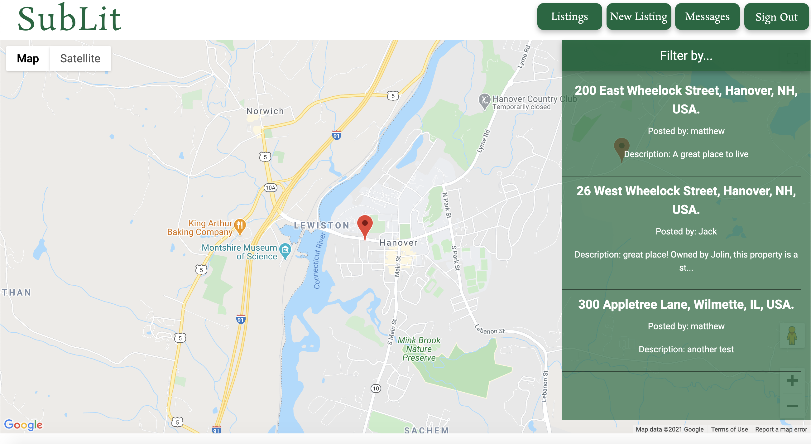

At the Robertson Lab, I designed and implemented a user authentication system that allows multiple research participants to take a research test on the same headset. The multi-user system consisted of a frontend on the Oculus headset in C# and Unity and a backend in PHP. The frontend allows participants to sign in to the project using a unique ID. The backend maps stores and adds the unique IDs as users sign in. Code available upon request.
Made for Full Stack Web Development (CS52), Sublit is a website that connects Dartmouth students to off-campus lessors. Sublit allows lessors to post their listing, add a description along with all relevant information. Potential leasors could chat with lessors, browse listings geographically using the google maps API, and contact lessors directly. Built using React, I created front-end elements for the login, maps API, and the chat pages. Code available on my GitHub.
Made for Object-Oriented Programming (CS10), this app runs the classic "Kevin Bacon Game." The game has a center actor, a target actor, and it returns the shortest movie-actor path between the two. Built in Java this app utilizes a class-based approach to the Kevin Bacon Game. Code available on my Github.